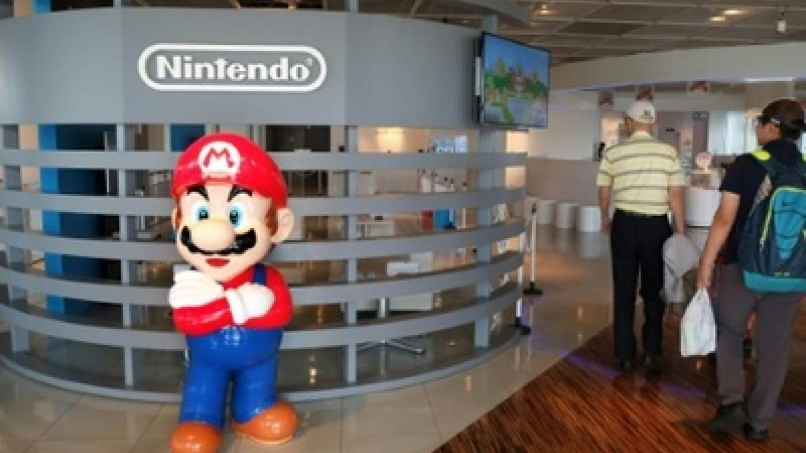

<p>Nintendo a annoncé vendredi à Tokyo le lancement international de sa
  nouvelle console Switch le 3 mars, un pari pour le pionnier japonais des
  jeux vidéo qui apparaît à la peine face à son grand rival Sony.
  Lors d'une conférence de presse à grand spectacle, la firme de Kyoto a pour la
  première fois montré et donné les détails de cette machine qu'il avait présentée
  en vidéo au mois d'octobre.
  La console de salon Switch tire son nom de sa faculté transformiste: elle peut
  être emportée à l'extérieur une fois sortie de son socle. La partie écran
  amovible comporte sur les deux côtés des manettes détachables, une pour chaque
  main, ou une pour chacun des joueurs si on est deux. Elles permettent différents
  modes de jeu exploitant, outre l'appui sur des touches, la reconnaissance de
  mouvements par accéléromètre ou par caméra infrarouge.
  Avec un concept "hybride" de cette nature, Nintendo ne concurrence pas
  directement Sony avec sa PlayStation 4, une machine fixe très puissante et
  offrant de multiples fonctions multimédias, mais s'installe entre ladite PS4 et
  le jeu sur smartphone.
  - 80 jeux à venir -
  "La Switch permettra des jeux auxquels il était impossible de jouer jusqu'à
  présent", a expliqué sur scène un responsable du développement de Nintendo.
  "C'est une console de jeu qui permet de s'amuser avec une autre personne, plutôt
  qu'avec une machine", grâce à ces deux manettes qui interagissent dans
  l'environnement réel, a-t-il ajouté.
  La nouvelle logithèque va s'appuyer sur ces fonctionnalités en partie inédites,
  dans la lignée des Wii et Wii U.
  "Dès à présent, 50 studios de développement sont impliqués dans la création de
  80 jeux", a annoncé Yoshiaki Koizumi, un dirigeant de Nintendo qui est aussi le
  producteur d'un nouveau Super Mario Odyssey, mettant en scène le célèbre plombier
  moustachu de Nintendo.
  "Nous continuons à préparer le lancement de nombreux titres avec nos partenaires
  pour offrir un nouvel univers de jeu", a promis le patron de Nintendo, Tatsumi
  Kimishima.
  "Personnellement, je suis très enthousiaste car je pense que c'est une console
  accessible au plus grand nombre. Elle est très différente de la PlayStation 4 et
  j'aurai sans doute les deux à la maison. La PS4, elle, ne s'emporte pas à
  l'extérieur", a commenté pour l'AFP Yusuke Tomizawa, un responsable d'une
  section de développement de jeu du groupe Bandai Namco.
  - Chute en Bourse -
  La Switch sera disponible début mars au Japon et dans plusieurs autres pays,
  dont les Etats-Unis, au prix de 299,99 dollars. Le tarif pour l'Europe sera
  précisé ultérieurement, directement dans les pays concernés.
  Le prix apparaît un peu au-delà de la barre de 250 dollars que des analystes
  estimaient être un seuil psychologique susceptible, s'il était dépassé, de
  freiner les ventes, ce qui peut expliquer la chute de l'action à la Bourse de
  Tokyo (-5,75% à la clôture).
  "Je pense au contraire que c'est un très bon niveau quand on considère les
  possibilités inédites offertes par les technologies embarquées, principalement
  via la manette de contrôle", a réagi pour l'AFP Hirokazu Hamamura, expert du jeu
  vidéo au sein de la maison d'édition Kadokawa. "Tout n'a pas été montré
  aujourd'hui et les investisseurs, qui réagissent par rapport aux revenus et
  profits, attendaient sans doute plus d'informations sur la stratégie de jeu en
  ligne et le couplage Switch/smartphone", d'où une relative déception,
  avance-t-il.
  Le faible nombre de titres disponibles au lancement - seulement huit - a
  également pu refroidir les actionnaires, mais M. Hamamura estime que "les gens
  ne veulent pas forcément beaucoup de jeux au départ, mais découvrir de nouveaux
  titres régulièrement".
  Cette console se doit en tout cas d'être un succès pour Nintendo, qui souffre
  depuis des années de la concurrence des smartphones et dont le chiffre d'affaires
  a été divisé par quatre depuis les plus beaux millésimes de la firme centenaire
  de Kyoto, en 2008/2009.
  Nintendo est aussi acculé à accélérer parallèlement sa stratégie d'offre de jeux
  sur smartphones, ce qu'il a commencé à faire après avoir été réticent à franchir
  le pas pendant des années.
  Après Tokyo, des événements pour découvrir la Switch sont prévus à Francfort,
  Paris et Londres.
</p>
